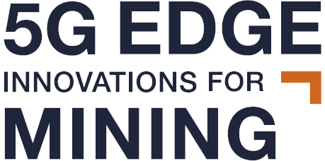
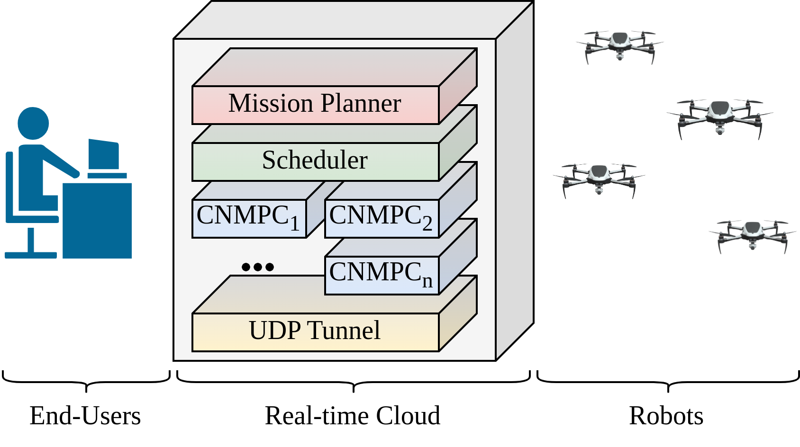
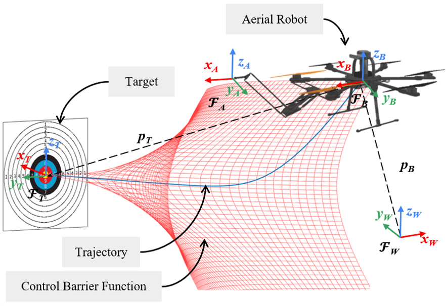

Co-founded Eighth Dimension GmbH in Munich, Germany, as CTO.
Read moreOn January 1st 2025, Eighth Dimension GmbH was officially founded in Munich, Germany. As CTO and co-founder, I lead the development of autonomous aerial systems, focusing on real-time object detection, tracking, multi-session 3D SLAM, and edge-offloaded AI. The startup is incubated by ESA BIC Bavaria, SCE – Strascheg Center for Entrepreneurship, and the AZO Space of Innovation, and aims to transform off-the-shelf drones into fully autonomous platforms.
Our research was selected for the prestigious IVA's 100 List of most impactful research results in Sweden.
Read moreOn November 18th 2024, our research project "Reconfigurable 6G Quality of Service (QoS) and Edge Integration for Robotics and Automation" was selected for IVA's 100 List. The Royal Swedish Academy of Engineering Sciences (IVA) annually recognises the 100 most impactful research results with potential to benefit Swedish industry and society. This recognition highlights the significance of our work on 6G-enabled robotics and edge computing.
Conducted field experiments for the 5G Edge Innovations for Mining (5GEIM) project in Skellefteå.
Read moreIn November 2024, I participated in a field experimental campaign for the 5G Edge Innovations for Mining (5GEIM) Vinnova project in Skellefteå, Sweden. The experiments focused on validating 5G-enabled edge-controlled robotic systems in a simulated underground mining environment, testing connectivity, latency, and control performance under realistic conditions.

Presented research at the 50th Annual Conference of the IEEE Industrial Electronics Society in Chicago.
Read moreIn November 2024, I travelled to Chicago, USA, to attend and present at IECON 2024, the 50th Annual Conference of the IEEE Industrial Electronics Society. The conference brought together researchers and practitioners from across the world working on industrial electronics, automation, and control.

Another round of field experiments for the 5GEIM project in Skellefteå mining area.
Read moreOn October 3rd 2024, I participated in another field experimental session for the 5G Edge Innovations for Mining (5GEIM) project in Skellefteå. These experiments built upon previous campaigns, focusing on refining the edge-control pipeline and assessing system robustness in the mining environment.
First of the autumn 2024 field campaigns for the 5GEIM project in Skellefteå.
Read moreOn September 18th 2024, I took part in a field experiment session for the 5G Edge Innovations for Mining (5GEIM) project at the Skellefteå site. The experimental runs tested 5G-enabled edge control of robotic systems, evaluating connectivity reliability and controller performance under real mining conditions.
Organised and lectured at the AERO-TRAIN Summer School on aerial robots and industrial inspection in Chania, Greece.
Read moreDuring June 7–13, 2024, I organised and participated in the AERO-TRAIN Summer School 2024 in Chania, Greece. The summer school was themed around aerial robots and their role in inspection and maintenance of industrial plants, and included a dedicated Human-Robot Interaction Day. I delivered a lecture on "Cloud-enabled Remote Control", covering the latest advances in edge and cloud computing for aerial robotic systems.
Attended the International Conference on Unmanned Aircraft Systems (ICUAS) 2024 in Chania, Greece.
Read moreIn June 2024, I attended the International Conference on Unmanned Aircraft Systems (ICUAS) 2024 in Chania, Greece. The conference brought together leading researchers in UAS technology, autonomy, and applications. I contributed to the event as an organiser of the co-located full-day workshop on Aerial Workers for Infrastructure and Asset Maintenance.

Organised a full-day workshop at ICUAS 2024 on aerial robots for real-world inspection and maintenance tasks.
Read moreI organised the full-day workshop at ICUAS 2024 entitled "Aerial Workers for Infrastructure and Asset Maintenance: The Journey from 'Lab' to 'Real-World'" in Chania, Greece. The workshop gathered researchers and industry professionals to discuss the path from laboratory-validated aerial robotic systems to real-world deployment for industrial inspection and maintenance applications.
Attended the AERO-TRAIN project general committee meeting in Copenhagen, Denmark.
Read moreDuring May 6–12, 2024, I attended the AERO-TRAIN General Committee meeting in Copenhagen, Denmark. The meeting gathered the project's Marie Curie fellows and supervisors to review research progress, discuss upcoming deliverables, and plan the final phase of the MSCA ITN–ETN project. I presented the LTU team's advances in edge-enabled robotic systems.